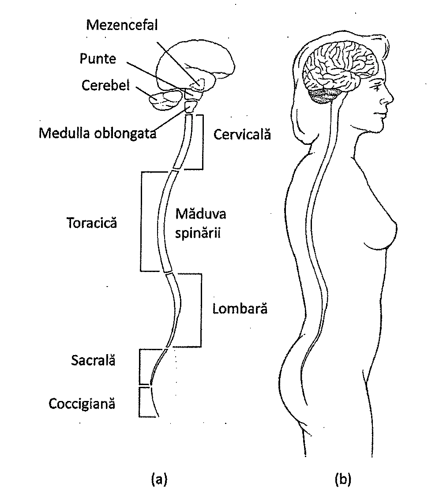
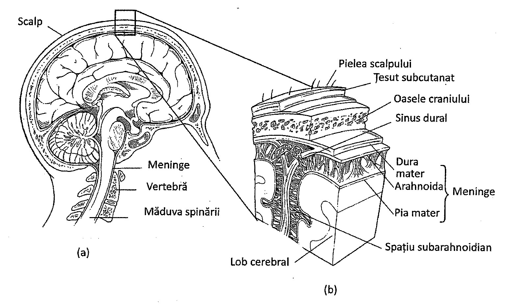
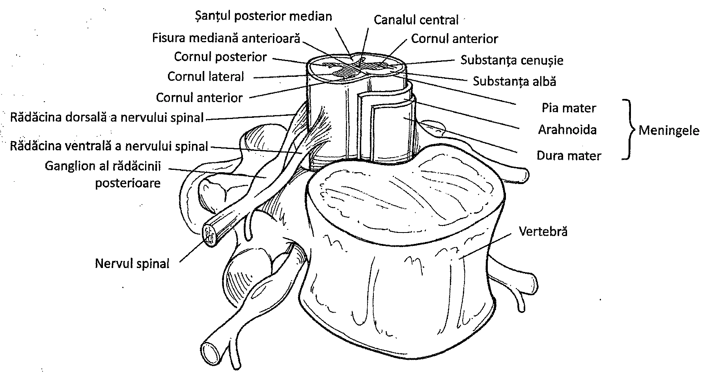
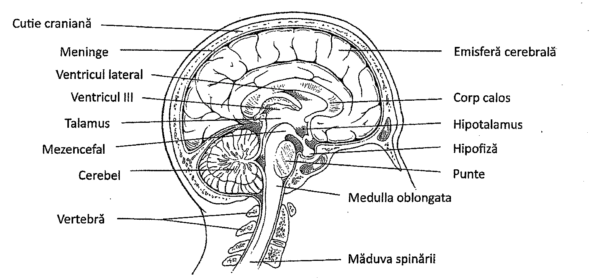
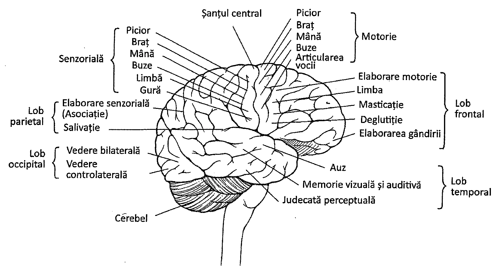
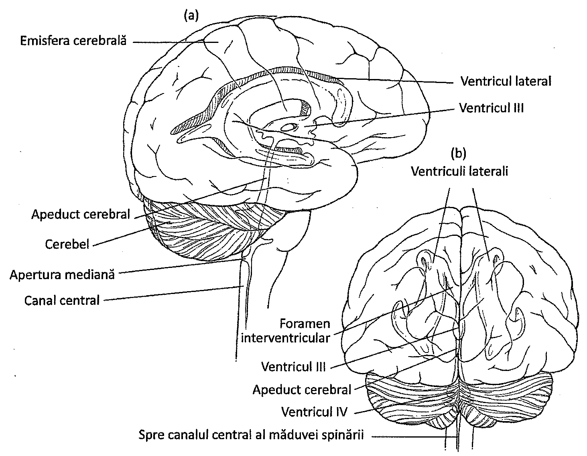
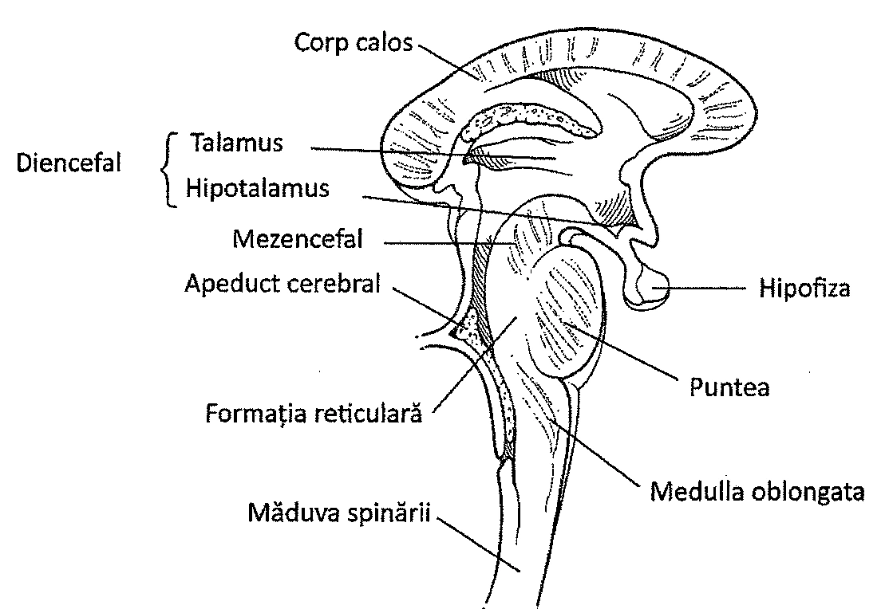
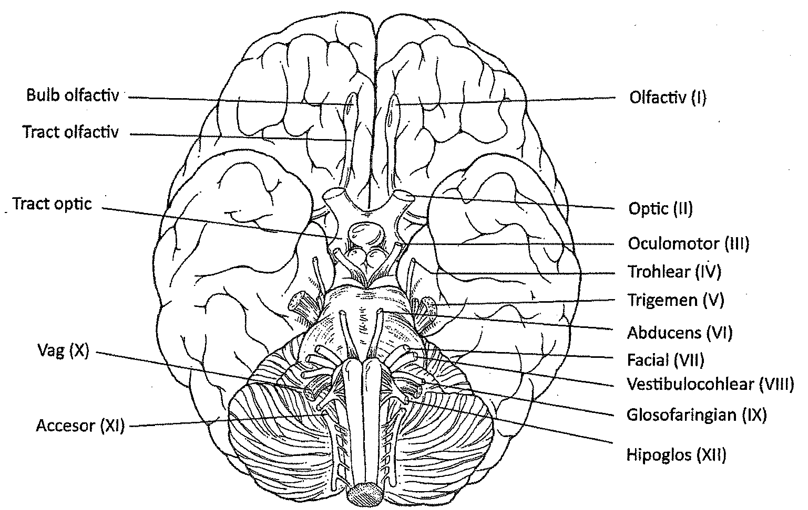
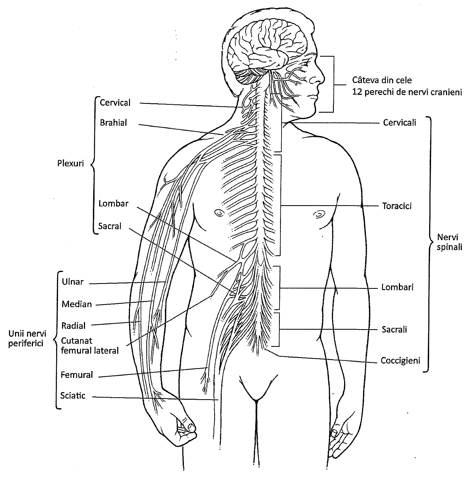
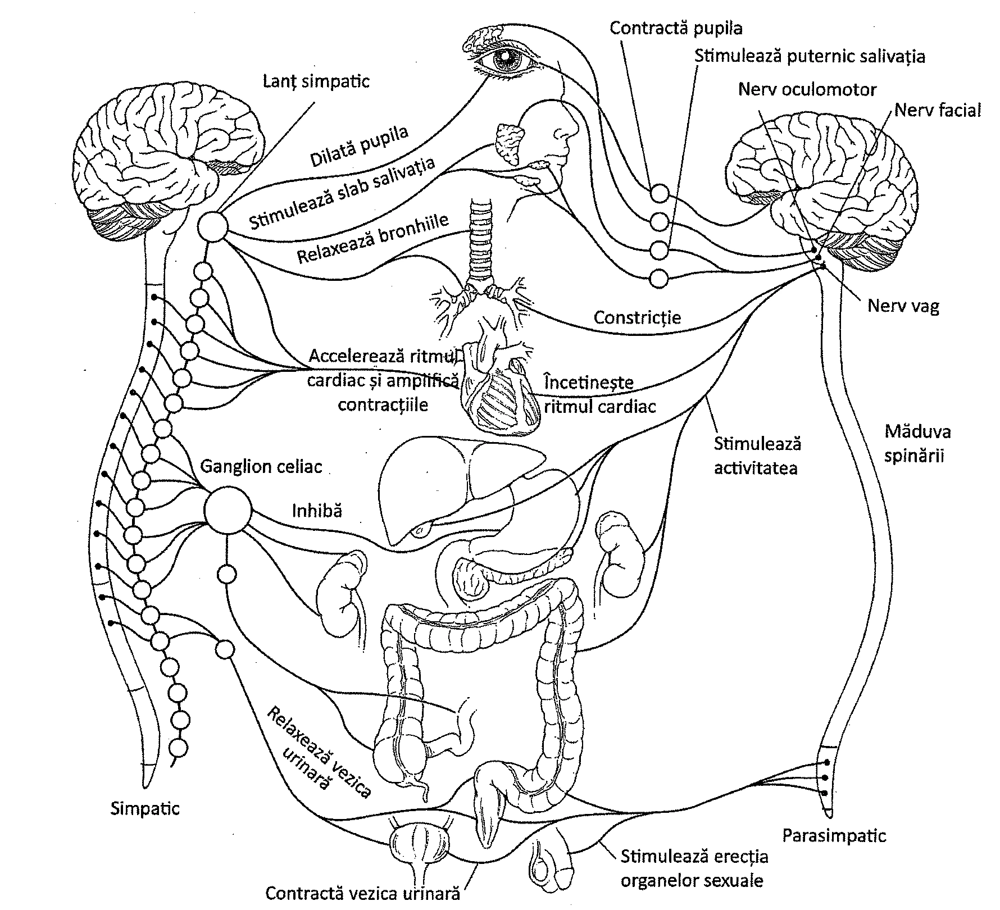

11.1. Sistemul nervos central
Organizarea generală
Sistemul nervos uman are două mari subdiviziuni: sistemul nervos central și sistemul nervos periferic (Tabelul 11.1).
Sistemul nervos central (SNC) este compus din encefal și măduva spinării. Aceste organe sunt alcătuite în principal din corpi celulari și axoni aparținând interneuronilor. Craniul și coloana vertebrală protejează encefalul, respectiv măduva spinării. Organele de simț sunt localizate în apropierea encefalului (Capitolul 12), această proximitate reducând distanța pe care impulsurile nervoase trebuie să o străbată pentru a fi interpretate.
Sistemul nervos periferic (SNP) este alcătuit în principal din axonii și dendritele neuronilor senzoriali și motori. Corpii celulari ai acestor neuroni sunt localizați în sistemul nervos central sau în vecinătatea lui. Axonii și dendritele se extind pornind de la sistemul nervos central sub formă de nervi. Majoritatea nervilor sunt denumiți „micști” din cauza prezenței simultane a elementelor senzoriale și a celor motorii. Sistemul nervos periferic informează sistemul nervos central despre stimulii primiți din mediul înconjurător și transmite răspunsurile către efectori (glande și mușchi).
| Sistemul nervos central | Sistemul nervos periferic |
|---|---|
| Encefalul | Nervi cranieni ce aparțin encefalului 1. Fibre somatice realizează conexiuni cu pielea și mușchii scheletici ai capului și gâtului 2. Fibre vegetative ce relaționează cu viscerele |
| Măduva spinării | Nervi spinali cu originea în măduva spinării 1. Fibre somatice care conectează pielea și mușchii scheletici cu măduva spinării 2. Fibre vegetative care conectează viscerele cu măduva spinării |
Sistemul nervos central
Sistemul nervos central este principalul centru de interpretare a informației din organism. Este compus din encefal, care se continuă cu măduva spinării.
Măduva spinării și meningele
La adultul normal, măduva spinării este un cordon de țesut nervos cu o lungime de aproximativ 45 cm (Figura 11.1). Se extinde în jos dinspre encefal, prin canalul osos format de vertebre. Măduva spinării este o continuare a encefalului, începând în locul în care țesutul nervos părăsește cutia craniană la nivelul foramen magnum (găurii mari) din osul occipital. Măduva spinării se subțiază la capăt și se termină în apropierea discului intervertebral ce separă prima și a doua vertebră lombară.
Partea superficială (externă) a măduvei spinării este albă („substanța albă”) datorită aglomerării de teci de mielină ce învelesc fibrele nervoase. Porțiunea internă este de culoare cenușie („substanța cenușie”) deoarece este alcătuită în principal din corpi neuronali și interneuroni amielinici.

Măduva spinării este înconjurată și protejată de trei membrane care poartă împreună numele de meninge: dura mater, arahnoida și pia mater. Dura mater este stratul exterior și conține un țesut conjunctiv fibros rezistent, cu multe vase de sânge și nervi. Arahnoida este un strat subțire, cu aspect de rețea, cu anumite structuri care reabsorb lichidul cefalorahidian. Pia mater este un strat foarte subțire, bogat vascularizat (Figura 11.2).
Spațiul dintre arahnoidă și pia mater se numește spațiu subarahnoidian și conține un lichid clar, apos, numit lichid cefalorahidian. Acest lichid se regăsește și în canalul central (ependimar) al măduvei spinării și în interiorul cavităților (ventriculilor) encefalului. Este un lichid asemănător cu limfa, ce servește nevoilor nutriționale și gazoase ale celulelor nervoase din SNC. Pentru a obține o probă din acest lichid în vederea efectuării analizelor când se suspectează o boală a sistemului nervos se folosește o procedură denumită „puncție rahidiană”.
Din părțile laterale ale măduvei spinării pornesc 31 de perechi de prelungiri numite rădăcini nervoase. Rădăcinile mai apropiate de partea dorsală a corpului se numesc rădăcini nervoase dorsale, aici găsindu-se corpii celulari și axonii neuronilor senzoriali ce se îndreaptă spre măduva spinării. Rădăcinile mai apropiate de partea ventrală a corpului se numesc rădăcini nervoase ventrale (Figura 11.3). Ele conțin axonii neuronilor motori ce pleacă dinspre măduva spinării. Lezarea rădăcinilor dorsale are ca rezultat pierderea senzațiilor provenite de la receptori (anestezie), iar lezarea rădăcinilor ventrale duce la incapacitatea de a răspunde la stimuli (paralizie). Rădăcinile dorsale și cele ventrale iau naștere din coarnele posterioare și respectiv anterioare ale măduvei spinării.


Măduva spinării are două funcții principale în coordonarea nervoasă, servind drept centru coordonator pentru arcul reflex și drept rețea de legătură între sistemul nervos periferic și encefal. Această legătură este realizată de axonii neuronilor din măduva spinării care au traiect ascendent, fiind grupați, sub forma unor tracturi nervoase numite tracturi ascendente. Alte tracturi nervoase transportă informația dinspre encefal înspre efectori (mușchi și glande), fiind denumite tracturi descendente. Aceste conexiuni nervoase furnizează un sistem de comunicație bidirecțională între encefal, mușchi și glande.
Encefalul
Encefalul este centrul de organizare și procesare al sistemului nervos (Figura 11.4). Este, de asemenea, centrul conștienței, senzațiilor, memoriei și al coordonării. Encefalul recepționează impulsuri nervoase de la măduva spinării și de la cele 12 perechi de nervi cranieni ce inervează organele de simț, mușchii și glandele. În urma acestora, el generează reacții adecvate și le transmite prin intermediul neuronilor motori. Encefalul este, de asemenea, inițiatorul unor activități ca, spre exemplu, memoria.
Encefalul conține și cele două emisfere cerebrale, dreaptă și stângă. Este acoperit de meninge (ca și măduva spinării) și înconjurat de lichidul cefalorahidian, care circulă în cavitățile cerebrale (ventriculii cerebrali) și în spațiul subarahnoidian. Encefalul dispune și de o vastă rețea de capilare cu rol în schimbul de nutrimente și de gaze și în îndepărtarea produșilor reziduali. Acest organ consumă aproximativ 25% din cantitatea totală de oxigen utilizată în organism și este extrem de sensibil la scăderea nivelului de oxigen sau glucoză.
Zonele superficiale și cele aflate în centrul encefalului poartă numele de „substanță cenușie”, deoarece sunt formate din corpii neuronilor și interneuroni amielinici. Aceste zone sunt conectate între ele de către axoni mielinici, denumiți „substanța albă” datorită culorii mielinei. Encefalul este împărțit în patru structuri principale: emisferele cerebrale, cerebelul, diencefalul și trunchiul cerebral.

Emisferele cerebrale
Emisferele cerebrale reprezintă cea mai mare parte a encefalului și conține centri nervoși senzoriali și motori. Ele controlează funcții mentale complexe și sunt unite între ele printr-o punte alcătuită din fibre nervoase numită corp calos. Suprafața emisferelor cerebrale conține numeroase circumvoluțiuni, numite și girusuri, și numeroase adâncituri. O adâncitură superficială este denumită șanț, iar una adâncă se numește fisură.
Emisferele cerebrale conțin peste 10 miliarde de neuroni. Fiecare emisferă este împărțită în patru lobi: lobul frontal, în partea anterioară; lobul parietal, în spatele lobului frontal, separat de acesta prin șanțul central; lobul temporal, situat sub lobul frontal și despărțit de acesta prin șanțul lateral, și lobul occipital, în partea posterioară a fiecărei emisfere. O altă zonă a emisferelor se numește insula (lobul insular), fiind localizată profund și acoperită de unele porțiuni ale lobilor frontal, parietal și temporal.
Emisferele cerebrale conțin neuroni ce interpretează impulsurile provenite de la organele de simț și inițiază răspunsuri voluntare la stimuli. Ele sunt centrul rațiunii și al memoriei și determină, în mare măsură, inteligența și personalitatea unui individ.
Aria motorie principală este localizată în lobul frontal (Figura 11.5). Aici se găsesc neuroni piramidali de talie mare. Impulsurile provenite de la acești neuroni se încrucișează prin intermediul tractului corticospinal și stimulează ariile motorii ale organismului situate în partea opusă. Aria lui Broca este o regiune a lobului frontal răspunzătoare de activitatea motorie legată de vorbire și de planificarea vorbirii. Ariile senzoriale se găsesc în mai mulți lobi. Aceste arii sunt răspunzătoare pentru senzații, sentimente și emoții. Lobii temporali conțin zone pentru auz, iar cei occipitali, zone pentru văz. Aria responsabilă pentru simțul mirosului este situată profund în interiorul emisferelor cerebrale.
Alte regiuni ale emisferelor cerebrale, în special arii ale lobului frontal, sunt asociate cu învățarea, rațiunea, anticiparea și creativitatea. Anumite regiuni ale lobilor parietali răspund de înțelegerea vorbirii și exprimarea ideilor. Senzațiile vizuale sunt interpretate în lobii occipitali.

În encefal se găsesc o serie de cavități interconectate numite ventriculi. Ventriculii conțin lichid cefalorahidian, ce servește nevoilor nutriționale ale celulelor nervoase și se varsă în canalul central al măduvei spinării. Există doi ventriculi laterali în interiorul emisferelor, iar un al treilea se găsește în diencefal. Al patrulea ventricul este localizat între trunchiul cerebral și cerebel (Figura 11.6).

Cerebelul
Cerebelul este o masă de substanță cenușie și albă, situată înapoia trunchiului cerebral, care coordonează activitățile motorii. Cerebelul primește stimuli de la emisferele cerebrale și de la receptorii senzoriali pentru a determina ce mușchi trebuie să se contracte. Spre exemplu, în timpul mersului, cerebelul determină care mușchi trebuie utilizați, precum și secvența și intensitatea contracțiilor.
Cerebelul constă din două emisfere separate parțial de către un sept al durei mater. Cerebelul comunică cu alte părți ale sistemului nervos central prin intermediul a trei tracturi nervoase denumite pedunculi cerebelari. În calitate de centru reflex pentru coordonarea activității mușchilor scheletici, cerebelul ajută la menținerea posturii și la secvențialitatea mersului.
Diencefalul
Diencefalul este regiunea situată deasupra mezencefalului, între emisferele cerebrale. Cuprinde în interior ventriculul al treilea și este organizat sub formă de mase de substanță cenușie denumite nuclei. Unul dintre aceștia, numit talamus, este un centru integrativ al impulsurilor senzoriale (Tabelul 11.2 prezintă, pe scurt, aceste funcții).
| Componentă | Funcții specifice |
|---|---|
| Bulbul rahidian / Medulla oblongata | Primește și integrează semnale de la măduva spinării; Trimite semnale către cerebel și talamus; Conține centri ce reglează activitatea cardiacă, presiunea sanguină, frecvența respiratorie, tusea și alte activități involuntare |
| Puntea | Are funcție de releu între medulla oblongata și părțile superioare ale encefalului, între emisferele cerebelare și între cerebel și emisferele cerebrale |
| Mezencefalul | Are funcție de releu pentru semnalele senzoriale între măduva spinării și talamus, și pentru semnalele motorii între cortexul cerebral, punte și măduva spinării; Controlează mișcările reflexe ale capului și ale globilor oculari ca răspuns la stimuli vizuali; Controlează mișcările reflexe ale capului și trunchiului ca răspuns la stimuli auditivi |
| Talamusul | Direcționează majoritatea semnalele senzoriale (cu excepția mirosului, văzului, auzului) spre cortexul cerebral; Direcționează către cortexul cerebral semnale care mențin starea de veghe; Procesează senzații brute |
| Hipotalamusul | Primește semnale senzoriale de la organele interne prin intermediul talamusului și utilizează aceste semnale pentru a controla acțiunile sistemului nervos vegetativ, și glanda hipofiză (pituitară), menținând astfel homeostazia organismului; Furnizează o corelare structurală și funcțională între sistemul nervos și cel endocrin prin relația cu glanda hipofiză; Împreună cu sistemul limbic, participă la reacția fiziologică față de experiențele emoționale |
| Cerebelul | Primește semnale senzoriale de la ochi; Coordonează echilibrul și receptorii din mușchi, tendoane și articulații, relaționați cu activitatea motorie |
| Emisferele cerebrale | Conține arii care recepționează și integrează semnale senzoriale (aria senzorială somatică, aria vizuală, aria auditivă) și care inițiază semnale motorii pentru mișcări voluntare (aria somatică motorie, aria vorbirii); Conține arii de asociație în care sunt interpretate semnalele senzoriale, sunt stocate amintirile și au loc procese complexe de procesare; Conține tracturi de fibre de asociație care au rol de releu între cortexul cerebral și alte zone ale sistemului nervos |
| Nucleii bazali | Ajută la controlarea tonusului muscular și la coordonarea mișcărilor voluntare |
| Sistemul limbic | Conține centrii plăcerii și pedepsei; Are rol în generarea sentimentelor și emoțiilor; Hipocampul stabilește care amintiri sunt stocate |
| Formațiunea reticulară | Conține nuclei implicați în starea de veghe și somn |
O altă parte componentă a diencefalului este hipotalamusul. Acesta transmite și primește semnale spre și dinspre emisferele cerebrale și talamus. Neuronii hipotalamusului produc hormoni, printre care și pe cei ce controlează glanda hipofiză (pituitară). Unii din acești hormoni sunt stocați în glanda hipofiză, care îi și eliberează. Acești hormoni reglează activitatea mai multor viscere. Senzația de foame, reglarea greutății, temperaturii corporale și echilibrului hidric sunt, de asemenea, asociate cu hipotalamusul.
Sistemul limbic cuprinde o serie de structuri situate în jurul corpului calos. El este implicat în emoțiile legate de supraviețuire, fiind astfel asociat cu sentimente precum teama, furia, plăcerea și supărarea. Prin urmare, poate avea o influență substanțială asupra comportamentului unei persoane.
Trunchiul cerebral
Țesutul nervos care conectează emisferele cerebrale cu măduva spinării conține un număr de structuri cunoscute sub numele colectiv de trunchi cerebral. Acestea sunt mezencefalul, puntea și bulbul rahidian (medulla oblongata).
Mezencefalul este situat între punte și diencefal (Figura 11.7). Fibrele nervoase ale mezencefalului se unesc cu celelalte segmente ale trunchiului cerebral și ale măduvei spinării în traseul lor spre encefal, iar neuronii localizați aici au funcția de centri reflecși. Pe partea inferioară a mezencefalului se găsesc tracturi corticospinale care unesc encefalul cu măduva spinării.

Trunchiul cerebral prezintă o proeminență denumită punte, care separă mezencefalul de bulbul rahidian (medulla oblongata). Puntea conține în principal fibre nervoase care transmit mesaje dinspre medulla oblongata înspre emisferele cerebrale și înapoi.
Bulbul rahidian (medulla oblongata) este partea superioară, dilatată, a măduvei spinării, care o conectează cu restul structurilor aflate în cutia craniană. Acesta reprezintă un pasaj pentru fibrele nervoase care vin de la emisferele cerebrale și trec prin bulb spre măduva spinării. Toate fibrele nervoase descendente trec prin medulla oblongata; unele dintre aceste fibre se intersectează formând decusația piramidală. Datorită acestei decusații, impulsurile nervoase provenite de la o emisferă cerebrală ajung pe partea opusă a corpului.
În interiorul bulbului rahidian (medulla oblongata) se găsesc nuclei ce servesc drept centri de control ai unor activități precum frecvența cardiacă, vasoconstricția, reglarea respirației, strănutul, tusea, voma și deglutiția.
Medulla oblongata conține grupuri de nuclei numite formațiunea reticulară, care se extind în punte și mezencefal. Aceste structuri sunt răspunzătoare pentru activarea cortexului cerebral la primirea impulsurilor senzoriale. Prin urmare, ele pregătesc cortexul pentru interpretarea acestor impulsuri și stimulează procesele cognitive.
11.2. Sistemul nervos periferic
Sistemul nervos periferic
Encefalul și măduva spinării sunt conectate cu celelalte părți ale corpului și cu mediul înconjurător prin intermediul unui complex de nervi și celule nervoase numit sistem nervos periferic. Acesta conține totalitatea țesutului nervos aflat în afara encefalului și a măduvei spinării, fiind compus în principal din nervi periferici, ganglionii asociați cu aceștia și receptorii senzoriali. Fibrele nervoase pot fi aferente sau eferente. Fibrele nervoase aferente conduc impulsurile nervoase înspre sistemul nervos central, iar fibrele nervoase eferente le conduc în sens invers. Aproape toți nervii periferici sunt nervi micști, conținând ambele tipuri de fibre. Fibrele aferente (senzoriale) iau naștere în structurile senzoriale. Fibrele eferente (motorii) iau naștere din sistemul nervos central și cuprind fibre somatice și fibre autonome (vegetative). Fibrele nervoase somatice inervează mușchii scheletici, pe când fibrele nervoase autonome (vegetative) inervează mușchii netezi, mușchiul cardiac și glandele.
Nervii cranieni și spinali
Sistemul nervos periferic transmite impulsuri nervoase senzoriale către sistemul nervos central, unde acestea sunt interpretate. Acest sistem transmite și impulsuri provenite de la sistemul nervos central către efectori (mușchi și glande), în cazul în care este necesară o reacție. Prin intermediul acestui sistem, suntem în permanență relaționați cu mediul înconjurător și putem reacționa la modificările acestuia.
Sistemul nervos periferic este alcătuit din 12 perechi de nervi cranieni și 31 de perechi de nervi spinali. Cele 12 perechi de nervi cranieni aparțin diferitelor zone ale encefalului și trec pe dedesubtul emisferelor cerebrale (Figura 11.8).
Unii nervi cranieni conțin atât axoni motori, cât și axoni senzoriali, alții conțin doar axoni senzoriali, ca de exemplu nervii olfactivi și optici. Alți nervi cranieni, ce controlează în principal efectorii, conțin axoni motori.
Nervii cranieni sunt denumiți utilizând numere și nume separate pentru fiecare (Tabelul 11.3 indică numele, numerele și funcțiile nervilor cranieni). Corpii neuronilor senzoriali se află grupați sub forma unor mase nervoase localizate în afara encefalului, numite ganglioni. Corpii neuronilor motori sunt situați de obicei în substanța cenușie. Nervul optic este, de fapt, o extensie a encefalului, învelit de meninge și mielinizat de către oligodendrocite, astfel încât lui nu i se aplică această descriere.

| Număr | Nume | Funcție (s = senzorial, m = motor) | Origine aparentă (locul unde nervul devine vizibil) |
|---|---|---|---|
| I | Olfactiv | (s) Miros | Emisfere cerebrale |
| II | Optic | (s) Văz | Diencefal |
| III | Oculomotor | (m) Mișcări oculare | Mezencefal |
| IV | Trohlear | (m) Mișcări oculare | Mezencefal |
| V | Trigemen | (m) Masticație (s) Sensibilitatea feței, a dinților și a limbii | Punte |
| VI | Abducens | (m) Mișcări oculare | Între bulb rahidian și punte |
| VII | Facial | (m) Mimica, (s) gust, salivație | Între bulb rahidian și punte |
| VIII | Vestibulo-cohlear | (s) Auz (s) Echilibru | Între bulb rahidian și punte |
| IX | Glosofaringian | (s, m) Limbă, faringe, glande salivare | Bulb rahidian |
| X | Vag | (s, m) Inimă, vase de sânge, viscere | Bulb rahidian |
| XI | Accesor | (m) Mușchii gâtului | Bulb rahidian |
| XII | Hipoglos | (m) Mușchii limbii | Bulb rahidian |
Sistemul nervos periferic include și 31 de perechi de nervi spinali care asigură comunicarea dintre măduva spinării și diverse părți ale corpului. Nervii spinali sunt grupați în nervi cervicali (8 perechi), nervi toracici (12 perechi), nervi lombari (5 perechi), nervi sacrali (5 perechi) și nervi coccigieni (1 pereche) (Figura 11.9).
Emergența nervilor spinali din măduva spinării are loc prin intermediul rădăcinilor dorsale și ventrale, provenite din coarnele posterioare și anterioare. Rădăcina dorsală conține un ganglion în care se află corpii celulari ai neuronilor senzoriali. Rădăcina ventrală nu prezintă ganglioni, deoarece corpii neuronali se află în substanța cenușie a măduvei spinării (Tabelul 11.4 prezintă o comparație între nervii cranieni și cei spinali).

| Caracteristică | Nerv cranian | Nerv spinal |
|---|---|---|
| Origine aparentă | Baza encefalului | Măduva spinării |
| Distribuție | Predominant cap și gât | Pielea, mușchii scheletici, articulații, vase sanguine, glande sudoripare, mucoase (cu excepția capului și gâtului) |
| Structură | Nervii senzoriali au doar fibre senzoriale, cei motori doar fibre motorii, iar cei micști conțin fibre senzoriale și motorii; o parte dintre aceștia conțin fibre aparținând sistemului nervos vegetativ | Nervii spinali sunt micști, conținând atât fibre senzoriale, cât și motorii; aceștia pot fi somatici sau vegetativi |
| Funcție | Văz, auz, miros, gust, mișcări oculare | Simț, mișcări, transpirație |
Nervii spinali se combină temporar înainte de a ajunge la destinație, formând rețele complexe numite plexuri. În interiorul acestora, fibre provenite de la mai mulți nervi sunt interconectate. Cele patru plexuri majore sunt: plexul cervical, plexul brahial, plexul lombar și plexul sacral (Figura 11.9).
11.3. Sistemul nervos autonom (vegetativ)
Sistemul nervos autonom (vegetativ)
Sistemul nervos autonom operează involuntar, fără control conștient. Această componentă a sistemului nervos coordonează funcțiile homeostatice ale unor viscere precum inima, mușchiul neted și glandele viscerale.
Sistemul nervos vegetativ cuprinde două tipuri de neuroni motori și ganglionii corespunzători. Primul tip de neuroni motori se găsește în sistemul nervos central și axonii lor se întind până în ganglion. Aceștia se numesc neuroni preganglionari, iar axonii lor fibre preganglionare. Cel de-al doilea tip se află în ganglion, axonii lor se extind până la organe și sunt numiți neuroni postganglionari, iar axonii lor fibre postganglionare.
Sistemul nervos vegetativ are o componentă simpatică și una parasimpatică (Figura 11.10). Nervii componentei simpatice au efecte identice cu ale adrenalinei (Capitolul 13), pregătind organismul pentru situații de urgență. Impulsurile simpatice trimise mușchilor cresc ritmul cardiac, provoacă vasoconstricție și dilatarea pupilelor și au și alte efecte adecvate situațiilor de criză. Impulsurile componentei parasimpatice determină revenirea organismului la normal. Aceste impulsuri încetinesc ritmul cardiac, dilată arterele, provoacă constricția pupilelor, stimulează digestia și ajustează funcțiile altor organe. În acest sens, ele restabilesc homeostazia organismului (Tabelul 11.5 compară cele două componente).

Efectele diferite ale componentelor simpatice și parasimpatice se datorează parțial neurotransmițătorilor secretați. Fibrele preganglionare ale ambelor componente și fibrele postganglionare parasimpatice secretă acetilcolină, iar fibrele postganglionare simpatice secretă noradrenalină. De aceea, fibrele postganglionare simpatice sunt denumite fibre adrenergice, iar fibrele postganglionare parasimpatice se numesc și fibre colinergice.
Cele două componente ale sistemului nervos autonom sunt antagoniste, dar nu în totalitate, pentru că fiecare componentă poate activa anumiți efectori în timp ce îi inhibă pe alții. Majoritatea activității sistemului nervos autonom este involuntară, dar encefalul păstrează un oarecare control asupra acestuia.
| Caracteristică | Sistemul simpatic | Sistemul parasimpatic |
|---|---|---|
| Efectul general | Pregătește organismul pentru situații stresante; Mediază aspectul anormal al funcțiilor organismului | Determină revenirea organismului la normal după încetarea situației stresante; Menține în mod activ aspectul normal al funcțiilor organismului |
| Extinderea efectului | În tot organismul | Localizat în țesuturi |
| Neurotransmițător | Noradrenalină (de obicei) | Acetilcolină |
| Originea în SNC | Nivelul cervico-toraco-lombar al măduvei spinării | Nivelul cranio-sacral (din trunchiul cerebral și măduva spinării) |
| Localizarea ganglionilor | Lanțuri ganglionare și ganglioni colaterali | Traseul nervilor cranieni III, VII, IX, X; Ganglioni terminali |
| Numărul fibrelor postganglionare | Multe | Puține |